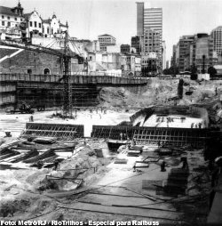

Informações Técnicas
História
O intenso e acelerado crescimento com que a cidade do Rio de Janeiro vinha experimentando desde o final do século XIX, fez com que o século XX começasse com a cogitação de um sistema de transporte rápido, eficiente e de grande capacidade. De olho nos sistemas subterrâneos que surgiam nas capitais européias e principais cidades americanas, a idéia de um sistema metroviário para o Rio de Janeiro, até então capital do Brasil, ganhava força. Em 1913, Buenos Aires inaugurava a sua primeira linha, demonstrando a viabilidade do sistema inclusive para as cidades da América Latina. Contudo, os altíssimos recursos necessários para a implantação do metrô sempre foram um grande empecilho.
Preocupavam ainda os primeiros idealizadores com a elaboração de um traçado ideal, tendo em vista a complexa geografia da cidade, característica da Cidade Maravilhosa, com bairros entre a orla marítima e morros. A diversidade dos tipos de terrenos (rochosos, sedimentares, etc.) a serem perfurados era outro aspecto a ser observado.
Vários estudos quanto à viabilidade técnica e econômica foram desenvolvidos visando a construção de um metrô para a segunda maior cidade do país, entre eles, os estudos da Companhia de Carris Luz e Força do Rio de Janeiro (em 1947), bem como a formação da Comissão Executiva do Projeto do Metropolitano no início da década de 50.
Mesmo com seu sistema de bondes, ônibus, lotações e vários túneis construídos para vencer as distâncias impostas pelos morros da cidade, o Rio de Janeiro, já nos fins da década de 50, demostrava sinais da necessidade de um metrô, uma vez que os problemas de tráfego e transporte se acentuavam.
Atento aos problemas que ameaçavam surgir, o governo do então Estado da Guanabara, na gestão do governador Negrão de Lima determinou, em 1966, a constituição de um grupo de trabalho para estudar a implantação de um sistema metroviário. Através de concorrência pública, foi formado um consórcio composto pela Companhia Construtora Nacional S.A., Hocthief Aktiengesellschaft für Hoch - und Tiefbauten vorm. Gergr. Helfmann e Deutsche Elsenbahn Consulting GmbH, para o qual foi encomendado um estudo mais detalhado. Completo e pormenorizado, o estudo estabeleceu a prioridade da construção inicial de 37,4 km de linhas.
Visando construir, implantar e operar o sistema metroviário no Rio de Janeiro, foi criada em 14 de novembro de 1968 pela Lei Estadual 1736, a Companhia do Metropolitano do Rio de Janeiro - METRÔ / RJ. Através do Decreto Lei 35 de março de 1975, a Companhia passou efetivamente a existir. Estatal vinculada à SECTRAN - Secretaria de Estado de Transportes, o Metrô foi constituído como sociedade de economia mista, sendo regulada pela Lei Federal 6404/76.
Numa cerimônia no dia 23 de junho de 1970, foi cravada a primeira estaca na Praça Paris, no bairro da Glória, marcando o início das obras. As obras prosseguiram até 1971, quando foram paralisadas por falta de recursos. Somente em 1975 as obras foram retomadas definitivamente, começando novamente na Glória. Nesta época, São Paulo já contava com sua primeira linha de metrô (linha Norte Sul – atual Linha 1 Azul).
Operários na construção do Metrô, no Jardim da Glória. 1975.
As obras prosseguiam em ritmo acelerado. A imprensa denunciava o trabalho intenso dos operários. As ruas da cidade se transformaram em grandes trincheiras, causando muitos transtornos aos moradores das áreas lindeiras e enorme caos ao trânsito do Rio de Janeiro.

Largo da Carioca durante as obras da Estação Carioca. 1976.
Se por um lado as obras mexiam com a vida dos cariocas, não se podia negar a curiosidade dos mesmos para com o novo sistema de transporte. Embora poucos conheciam um sistema metroviário (além daqueles que já conheciam o metrô paulistano e os de outros países), o Metrô do Rio de Janeiro reservava muitas surpresas e novidades.

{kind=link}
{kind=link}
Com a presença das autoridades federais e estaduais na Estação Central, o Metrô do Rio de Janeiro foi inaugurado em uma grande cerimônia no dia 05 de março de 1979. A bordo de um trem, os governadores Chagas Freitas e o presidente João Figueiredo, inauguraram na seqüência as Estações Praça Onze (onde havia um trem em exposição para conhecimento da população), Presidente Vargas, Cinelândia e Glória. Era o começo da Linha 1.
Nos primeiros dias, as viagens eram gratuitas, com as estações abertas ao público das 9h às 15h. Com apenas 4 trens de 4 carros, o intervalo entre as composições era de 8 minutos. Nos primeiros 10 dias, o Metrô transportou mais de 500 mil passageiros, com média diária de 60 mil pessoas. O maior movimento de embarque e desembarque era registrado na Estação Cinelândia, com mais de 1/3 do total. A partir do dia 15 de março de 1979, o Metrô passou a operar comercialmente cobrando Cr$ 4,00 pelo bilhete unitário. Com a proximidade das festas de final de ano, em dezembro de 1979, o horário de funcionamento do Metrô foi ampliado para às 23 horas.
O Metrô do Rio de Janeiro revelava inúmeras diferenças e particularidades em relação aos metrôs de outras cidades. Nas estações, acabamento de primeira, paredes com pedras, cores – visual bem diferente de outros metrôs, como o de São Paulo, onde se observa muito concreto exposto. Nos trens com interior colorido, o ar condicionado faz sucesso até hoje (durante muitos anos o Metrô do Rio foi o único transporte público regular e não seletivo com ar condicionado no Brasil – nos dias atuais apenas os trens da Linha 5 do Metrô – SP, e algumas composições da Supervia do RJ, da CPTM de São Paulo e do Metrô de Recife, possuem ar condicionado). Outro item de conforto para o usuário do metrô carioca, é o vidro colado. Além de permitir melhor funcionamento do condicionador de ar, proporciona uma viagem mais silenciosa, diminuindo os ruídos no interior do carro.
Com o primeiro trecho em funcionamento, as obras continuavam à pleno vapor em várias frentes. Além das estações Uruguaiana e Carioca (que faziam parte do trecho inaugurado, mas ainda não tinham sido entregues), a Linha 1 era expandida em seus extremos. Enquanto isso moradores da Tijuca, Flamengo e Botafogo continuavam vivendo em meio a grandes canteiros de obra. Porém, a cada estação inaugurada, toda a área lindeira às novas estações era reurbanizada, o que fazia aumentar a simpatia da população pelo metrô.
Obras da Estação Largo do Machado e trânsito nas ruas do bairro do Flamengo.
{kind=link}
O ano de 1980 foi marcado pela inauguração de 2 grandes e importantes estações. No dia 17 de março foram abertas ao público a Estação Uruguaiana (no centro da cidade) e a Estação Estácio (que posteriormente passou a permitir a integração para a Linha 2), trazendo um aumento significativo no número de passageiros, justificando a entrada de mais 2 trens em circulação (passou para 6 trens) a partir de setembro de 1980.
Estação Estácio (plataforma central da Linha 1)
{kind=link}
Muitas inaugurações ocorreram em 1981. No mês de junho (dia 14), a Carioca, a principal estação do metrô do Rio foi inaugurada. Em setembro (dia 18), o trecho sul foi inaugurado com as Estações Catete, Morro Azul (atual Flamengo – alterado a pedido dos moradores) e Botafogo (com estacionamento integrado ao Metrô), enquanto a Estação Largo do Machado vinha a funcionar somente em 23 de dezembro daquele ano, completando deste modo o trecho sul que estava em obras.
{kind=link}
Em obras desde o final da década de 70, a Linha 2 veio a ser inaugurada apenas com 3 estações em 19 de novembro de 1981. Partindo da estação Estácio, de onde vinham os passageiros da linha 1, a nova linha contava com as Estações São Cristóvão e Maracanã, permitindo acesso privilegiado aos dias de jogos no estádio do Maracanã, bem como ao Campus Universitário da UERJ. A princípio funcionava das 6h às 20h e apenas com 2,92 km.
A medida que o sistema crescia, novidades surgiam. A bilhetagem automática passou a funcionar em janeiro de 1981, permitindo controle do acesso dos passageiros, além das estatísticas de tráfego. A integração com as linhas de ônibus, veio em dezembro, ligando a Estação Estácio à Zona Norte.
Maio de 1982 trouxe mais novidades para o metrô carioca. Além da inauguração do trecho norte (dia 27), com as estações Afonso Pena, São Francisco Xavier e Saens Peña, a Linha 1 passou a contar com sistema de Piloto Automático, que controla a aceleração e frenagem do trem, cabendo apenas ao operador do trem a abertura e fechamento das portas e anúncio das estações. Deste modo há maior segurança operacional, permitindo maior velocidade e redução no intervalo de trens. Estrearam ainda a integração tarifária com as Barcas e os trens articulados na Linha 2.
Trem parte da Estação Afonso Pena
{kind=link}
O trem articulado (ou VLT – Veículo Leve sobre Trilhos) foi concebido pelo Metrô do Rio em parceria com a Cobrasma. Formado por carros articulados, em duas seções, permite a combinação de 2 ou 4 carros. Em março de 1983 (dia 12) passaram a ligar as recém inauguradas estações Maria da Graça, Del Castilho, Inhaúma e Irajá, através de um sistema de pré-metrô. Inicialmente com alimentação elétrica através de rede aérea (posteriormente com terceiro trilho, em 750 volts em corrente contínua) o trecho próximo a estação Irajá contava inclusive com passagem em nível.
Trem Articulado (Pré-Metrô) chega à Estação Maracanã (linha 2)
{kind=link}
A Linha 2 passou a ser dividida em 2 segmentos. O trecho Estácio – Maria da Graça operava com 4 trens das 6h às 20h, com intervalos de 6 minutos e 15 segundos. Para seguir viagem à Iraja era necessário desembarcar em Maria da Graça e aguardar outro trem. O outro trecho tinha apenas 2 trens com intervalo de 18 minutos, operando das 9h às 15h.
Embora a baldeação de trens na Estação Maria da Graça desagradava os passageiros, o pior ocorreu em 2 de dezembro de 1985. Em função de um vazamento na tubulação da CEDAE (estatal de águas e esgoto) na altura da futura Estação Engenho da Rainha que veio a causar graves danos à via permanente, o sistema de Pré-Metrô foi desativado.
Estação Maria da Graça: Baldeação obrigatória do trem metrô para o trem articulado.
{kind=link}
A partir da segunda metade da década de 80, no governo de Leonel Brizola e nas gestões que lhe sucederam, o Metrô do Rio passou por problemas bem graves. Além de não investir mais no Metrô, o sistema começou a encolher. Ao ser reaberto em 1987, o Pré-Metrô não mais ia à Irajá, mas apenas até Inhaúma. As estações abandonadas foram invadidas e as vias do Pré-Metrô deram origem à favelas. Inaugurações, somente de estações intermediárias do trecho que restava em funcionamento. Estação Triagem passou a funcionar em 30 de junho de 1988 e Engenho da Rainha somente em 13 de março de 1991.
Novamente a Linha 2 foi paralisada durante 7 meses em 1994 em razão da falta de material rodante. Além da malha metroviária ter diminuída, a imprensa começava a denunciar a canibalização de trens. Com a falta de recursos e investimentos no Metrô, peças eram tiradas de alguns trem para serem colocadas em outros. Assim sendo, muitos trens acabavam ficando inviabilizados de prestar serviços de passageiros.
Com a diminuição dos trens disponíveis, começou a aumentar os atrasos e intervalos entre as composições. Para piorar, a cidade passava pelo projeto Rio Cidade, de autoria do prefeito César Maia que pretendida revitalizar a cidade. Com obras e congestionamentos pela cidade toda, aumentaram o número de usuários, mas sem que o Metrô tivesse capacidade de transporte necessária, tendo em vista a falta de trens. O Metrô chegou a ter a metade dos trens em circulação nas horas de pico na Linha 1 com atrasos de mais de 20 minutos.
Embora os problemas financeiros eram graves e as situações muitos difíceis, o fato da companhia possuir excelente recurso humano compensava as dificuldades. O Metrô sempre zelou pela qualidade de seus serviços. Os trens circulavam limpos, seguros e muito bem conservados, não deixando claro aos usuários os problemas da companhia, exceto pelos grandes intervalos entre os trens.
A partir de 1996, o governo Marcelo Alencar deu atenção especial para o Metrô, retomando obras que permitiram a expansão da Linha 1 para Copacabana (obra que havia sido paralisada no Governo Brizola no ínicio da década de 90) e da Linha 2 para a Pavuna. Em setembro daquele ano, as estações Tomás Coelho e Vicente de Carvalho foram inauguradas na Linha 2.
Além disso, o governo de Marcelo Alencar iniciou em 1995 um processo de transferência dos serviços públicos do Estado para a iniciativa privada. Em 1997 foi a vez do metrô. Após inúmeros protestos por parte do Sindicato do Metroviários, às 10 horas do dia 19 de Dezembro de 1997, os serviços de operação e manutenção do sistema metroviário foram leiloados na Bolsa de Valores do Rio de Janeiro. Num leilão muito disputado, venceu o consórcio Opportrans, que ofereceu o segundo maior ágio na história do país (921%), no valor de R$ 291 milhões, para operar o metrô carioca até 2018.
A Opportrans adotou o nome fantasia de Metrô Rio, e assumiu o controle operacional e de manutenção do sistema no dia 05 de Abril de 1998. Para chamar a atenção dos usuários, o sistema operou das 14h às 20h com entradas gratuitas. A propriedade sobre o patrimônio físico (túneis, estações, trens, etc.), contudo, permanece sob responsabilidade do Estado.
Na fase de transição, coube à Companhia do Metropolitano do Rio de Janeiro permitir a transferência de conhecimento técnico (know-how) e de pessoal. Em 1997, o Metropolitano tinha 2406 funcionários, sendo que nem todos foram incorporados pela Metrô Rio (apenas 573 – os demais funcionários se inscreveram em programa de demissão voluntária ou foram remanejados para outras empresas e secretarias do Estado do Rio).
Ainda à Companhia do Metropolitano do Rio de Janeiro coube inicialmente a função de elaborar projetos e construção de futuras linhas e estações e a fiscalização da nova concessionária Metrô Rio, bem como era a proprietária direta dos bens do sistema.
Após o controle da Metrô Rio, ainda em 1998, foram inauguradas as estações (na linha 1) Cardeal Arcoverde (dia 02 de julho), (e na linha 2) Pavuna (dia 31 de agosto), Irajá (31 de agosto), Acari-Fazenda Botafogo e Engenheiro Rubens Paiva (24 de setembro), Coelho Neto e Colégio (dia 29 de setembro).
{kind=link}
A fiscalização do sistema metroviário passou a ser de responsabilidade da ASEP (Agência Reguladora de Serviços Públicos Concedidos do Estado do Rio de Janeiro) em outubro de 2000. Cabia ainda a ASEP, a gerência do contrato de concessão e estabelecer tarifas. Em janeiro de 2001, a Companhia do Metropolitano foi desvinculado da Secretaria de Transportes, passando a ser subordinado à SEDUR (Secretaria de Desenvolvimento Urbano). Através do Decreto 28.313 (11 de Maio de 2001), a SEDUR iniciou os procedimentos para a cisão parcial da Companhia do Metropolitano do Rio de Janeiro. Em 25 de Maio de 2001, foi criada uma nova empresa, a RIOTRILHOS - Companhia de Transportes sobre Trilhos do Estado do Rio de Janeiro. A histórica Companhia do Metropolitano do Rio de Janeiro - METRÔ/RJ passou a se encontrar em regime de liquidação.
Entre 2002 e 2003 a população carioca assistiu a um impasse quanto à inauguração da Estação Siqueira Campos, no extremo sul da linha 1, justamente no período de troca de governadoras. Após um impasse político entre a Benedita da Silva (que inaugurou a estação em 21 de dezembro de 2002, mas não a colocou em funcionamento) e Rosinha Mateus que alegava problemas de segurança, depois de muitos adiamentos, a inauguração ocorreu definitivamente em 1º de Março de 2003.
Exatos 4 anos depois a história se repetia. Em 18 de dezembro de 2006, Rosinha inaugurava a Estação Cantagalo (novo terminal no extremo sul da linha 1) - também sem condições de funcionamento. Cantagalo somente viria a ser liberada para operações comerciais em fins de fevereiro de 2007, já no Governo de Sérgio Cabral.
Atualmente, cabe a AGETRANSP (Agência Reguladora de Serviçõs Concedidos de Transportes Aquaviários, Ferroviários e Metroviários e de Rodovias do Estado do Rio de Janeiro) a fiscalização do sistema metroviário - a qual cabia anteriormente a ASEP. Por sua vez, a RIOTRILHOS continuou responsável pelos projetos e obras de expansão do Metrô do Rio de Janeiro.
{kind=link}
Leandro Machado de Castro
Fotos: Companhia do Metropolitano do Rio de Janeiro – METRÔ/RJ e Rio Trilhos
Railbuss
Concessão
Em 28 de novembro de 1995, a Lei Estadual nº 2.470 instituiu o PROGRAMA ESTADUAL DE DESESTATIZAÇÃO - PED, a partir do qual iniciou-se o processo de transferência para a iniciativa privada de serviços públicos até então vinculados ao Estado.
Em dezembro de 1997 realizou-se, na Bolsa de Valores do Rio de Janeiro, o Leilão para a concessão dos serviços de operação e manutenção da rede metroviária do Rio.
A partir de abril de 1998, após 19 anos de operação comercial sob a responsabilidade da Companhia do Metropolitano do Rio de Janeiro - METRÔ, os serviços de operação e manutenção da rede metroviária foram concedidos, por um período de 20 anos, à OPPORTRANS CONCESSÃO METROVIÁRIA S/A, consórcio composto pelas empresas COMETRANS*, BANCO OPPORTUNITY e VALIA.
É importante ressaltar que, no processo de concessão, a propriedade sobre o patrimônio físico permanece sob responsabilidade do Estado, que possui ainda o poder de fiscalização sobre as atividades concedidas.
O trecho sob concessão abrange a Linha 1, com 18 estações interligando os bairros de Copacabana (Estação Cantagalo) e Tijuca (Estação Saens Peña), e a Linha 2, com 16 estações que integram o Centro do Rio (Estação Estácio, de transferência para a Linha 1) ao Subúrbio (até à Estação Pavuna), num total de 42 km de via.
Para garantir a continuidade do funcionamento do sistema, foram transferidos para a nova empresa 573 empregados do METRÔ, em regime de cessão trabalhista.
Após a concessão, a Companhia do Metropolitano do Rio de Janeiro, hoje RIOTRILHOS, passou por total reformulação interna, com redução do seu quadro de empregados e redefinição do seu perfil organizacional (Missão / Valores / Macro-objetivos), tendo sempre como princípio assegurar à população carioca um transporte de qualidade, moderno, eficiente e seguro.
Os papéis do Estado, RIOTRILHOS e Concessionária Opportrans
Até hoje, é comum existirem dúvidas em relação à concessão dos serviços metroviários das linhas 1 e 2. Portanto, vamos esclarecer a mais comum, que é o papel dos órgãos envolvidos diretamente neste assunto.
- Estado: é o Poder Concedente do Transporte Metroviário no Rio de Janeiro.
- RIOTRILHOS: é a proprietária dos bens móveis e imóveis, incluindo estações, túneis, vias permanentes, sistemas e trens. É também responsável pelo planejamento, projetos e obras de expansão do sistema metroviário.
- Opportrans Concessão Metroviária S/A: é a responsável pela operação e manutenção do sistema, nos termos definidos no Contrato de Concessão, por um período de 20 anos a contar de abril/1998.
- ASEP - Agência Reguladora de Serviços Públicos Concedidos: é responsável por gerir o contrato de concessão, estabelecer tarifas e fiscalizar a qualidade dos serviços prestados pela Concessionária.
Fonte: o extinto site da RIOTRILHOS.
* Fundos compram participação de Cometrans no Metrô do Rio
A Opportrans Concessão Metroviária, empresa que administra o Metrô do Rio de Janeiro, anunciou ontem a conclusão do acordo pelo qual a sócia argentina Cometrans venderá sua participação de 31,94% na empresa para os outros dois acionistas: Sorocaba Empreendimentos e Participações e Valia, fundo de pensão dos funcionários da Vale do Rio Doce.
Com o acordo, a Sorocaba, que tinha 57,85% da empresa, passará a deter 85% das ações ordinárias da Opportrans, e a Valia, que antes tinha 10,21% da concessionária, ficará com 15%. O valor da transação não foi divulgado.
Segundo a última informação disponível no site da Comissão de Valores Mobiliários (CVM), a Sorocaba é uma empresa controlada pelos fundos de pensão Previ, Petros e Funcef, por meio do Investidores Institucionais FIA, em conjunto com o Citigroup e o Grupo Opportunity.
Fonte: ANAPAR - Fundos compram participação de Cometrans no Metrô do Rio
Frota
Trem Metrô
Os trens do metrô do Rio de Janeiro são formados por dois tipos de carros: os equipados com cabina de condução - tipo A - e os sem cabina - tipo B. Ambos são motorizados e energizados a 750 V através de uma barra de alimentação de corrente contínua, chamada 3° trilho, instalada paralela aos trilhos de rolamento, por onde é feito o retorno da corrente.
O carro é do tipo monobloco, basicamente construído em aço inoxidável, e possui cuidadoso isolamento térmico e acústico. Três portas duplas corrediças de cada lado dão acesso aos carros. As janelas são panorâmicas, de vidro laminado semelhante ao fumê.
Cada carro dispõe de duas unidades de ar condicionado, que mantêm a temperatura ambiente em 24 graus e a umidade relativa do ar a 55%.
Cada carro tipo B do metrô do Rio pode transportar até 378 passageiros, dos quais 48 sentados. O tipo A, com cabina de condução, transporta até 351 passageiros, sendo 40 sentados. Em composições de 6 carros a capacidade dos trens do Metrô atinge a 2.214 passageiros.
Os trens podem ser compostos de 4 a 8 carros, tendo sempre nas suas extremidades os que possuem cabina de condução.
{kind=link}
Trem Articulado
O trem articulado, cujo projeto foi desenvolvido pelo METRÔ do Rio de Janeiro, é um Veículo Leve sobre Trilhos (VLT). É formado por carros articulados, em duas seções, para operação múltipla, em combinação de dois ou quatro carros, motorizados a 750 V, através de 3° trilho.
Suas características fazem com que ele seja um veículo extremamente versátil, podendo ser operado tanto em malha urbana quanto em via exclusiva, possibilitando a utilização de sistemas operacionais sofisticados.
Cada carro pode transportar até 317 passageiros, sendo 58 sentados. Em composições de dois carros a capacidade do trem articulado atinge aproximadamente 500 passageiros.
{kind=link}
Obs: o metrô do Rio de Janeiro possui uma frota de 182 carros (Mafersa e Alston) e 30 carros VLT - dois foram baixados - que estão fora de operação.
Fonte: o extinto site da RIOTRILHOS.
Gostou de todas essas informações? Venha participar de um fórum sobre o Metrô Rio - Metrô do Rio de Janeiro [Thread Oficial] - SkyscraperCity